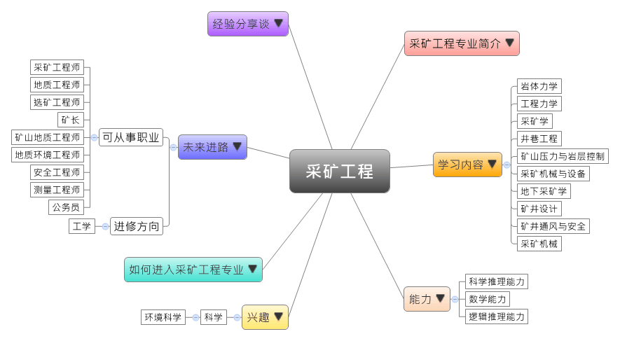

- 专业大观园
-

- 专业介绍
-
什么是采矿工程？
采矿工程是以矿业工程为主，集合地面、地下建筑、爆破工程、矿业技术经济于一体的多学科专业。在职场上，就业率较高，采矿工程出来并不一定要进矿山，也可以从事其他的工作，因为在本科期间会学很多有关地面和地下专业的课程，毕业生未来可从事冶金、化工、核工业、非金属和煤炭等采矿相关的工作；在生活中，采矿除了有益于经济发展，也对于环境有相当大的影响，通过土地资源再利用的机会，我们可以重建环境景观、水土保持，让我们的生活环境更加美好。
采矿工程专业除了训练学生具备岩体工程力学、采矿及矿山安全，以及工程学的理论与技术，也需要具备各种矿区的规划、矿山开采与设计、各类岩层的控制技术、开采矿山的安全技术，以及工程设计等基本工程能力，培养学生成为专业的高级工程人才。
采矿工程专业生产实习 参观矿山机械设备
- 学习内容
-
采矿工程专业学生主要学习采矿工程的理论与技术，由于采矿工程是高应用型的专业，所以学生须接受矿区规划、采矿规划与设计，以及各种安全技术的实际演练。
本专业学习方向通常分为三面向：工程力学类、采矿机械类和技术设计类；其他学校也有开设矿山企业管理或特殊开采技术等课程，为学生未来就业做好准备。采矿工程专业主干课程有：岩体力学、工程力学、采矿学、井巷工程、矿山压力与岩层控制、采矿机械与设备、地下采矿学、矿井设计、矿井通风与安全、采矿机械、电工与电子技术、工程力学与技术经济分析……等。此外，学生须加选一门以上的实践性教学课程，如：地质与测量实习、采矿认识、生产及毕业实习、计算机应用及上机操作进行选修。
本专业可以习得的知识与获得之能力、技能列点：第一，掌握采矿科学的基本理论、矿区开发与规划原则，以及具备巷道开拓等生活应用工程的能力；第二，具备采矿新工艺、新技术，以及先进的生产组织和技术管理能力；第三，具有监测矿山压力与岩体工程、确保矿井通风与空气质量，以及熟练矿山安全与各种矿井灾害预防技术的能力。
- 能力
-
采矿工程专业学生，需具备以下能力：
相关性向能力 说明 科学推理能力  具有矿区开发的能力
具有矿区开发的能力
能掌握巷道开拓的设计方法
具备矿山压力及岩体工程监测的能力数学能力 有数学推导的能力
具有进行大比例尺地质测量与数字化的能力逻辑推理能力 具备批判与独立思考的能力
能分析矿脉分布与自然环境的关系
能够提出利于环保的开采方式并进行验证
- 兴趣
-
若你对下列活动或事物有高度兴趣，可考虑进入采矿工程专业学习：
科学 环境科学 对矿物生成环境与原因感兴趣
对矿山与岩层的变化现象感兴趣
喜欢从事野外考察与操作类型的工作
- 如何进入此专业
-
下面列举开设采矿工程专业的211工程重点大学院校：
- 未来进路
-
可从事职业
随着国家对矿产的需求增加，加上对于环境保护的重视，以及工程安全意识逐渐抬头，采矿工程逐渐朝向经济、安全、环保的多元方向前进。学生毕业后就业选择也就多元，通常适合到油矿、煤矿、金属矿、铁矿、石膏矿产业从事石油、天然气、重金属和宝石等的开采工程人员；同时也可在矿务局、矿山管理处、工程建设公司、采矿设备商、测量公司等担任矿山、隧道、蓄水坝工程的技术人员；亦可在国土规划、环保和河道管理等与城市基础工程相关的政府机关从事相关生产开发、科学研究和教学工作。在工作职场上皆能发挥矿区规划与开发、预防工安灾害等专长：
行业 职业 采矿业 采矿工程师、地质工程师、选矿工程师、采矿技术员、矿长、矿山地质工程师、地质环境工程师、安全工程师 专业技术服务业 测量工程师、技术员 国家机构（国土规划、
环保、城市规划）公务员 进修方向以下列举采矿工程专业毕业生可以继续修读之学科门类、一级学科与硕士点：
学科门类 一级学科 硕士点 工学 矿业工程采矿工程、矿物加工工程、安全技术及工程、资源开发规划与设计、矿山环境工程、矿业信息工程、矿山评价技术及工程 工程（专业硕士）矿业工程、石油与天然气工程 土木工程岩土工程、防灾减灾工程及防护工程、安全科学与减灾
- 经验分享谈
-
“小矿集约化开采”模式的创建者——古德生
古德生是我国著名的采矿专家，他开创了我国振动出矿技术和地下金属矿连续采矿技术新领域；发明了颠阵型振动出矿机，开发出系列装运、筛洗工艺的新型振动设备；创造了与自主研发的振动连续作业机组配套的无间柱连续采矿法，并针对松软破碎矿体开采条件，发明了“开采环境再造深孔诱导崩矿嗣后重填采矿法”。
古德生分析说，目前，我国中小型有色金属矿山大概占到总量的80%，长期以来“小矿小采”的模式不但浪费了资源，也对生态环境造成了破坏。小矿开采没有现代化的未来，不转型升级不但对地方经济发展不利，甚至会影响全国矿业的发展，因此现在必须走“小矿集约化开采”的路子。他所说的“小矿集约化开采”就是由他首创的具有我国特色的“区域矿山”建矿新模式。这一模式在云南经过11年的实践，取得了显着成效，为我国广大中小矿群实现集约化、规模化开采走出了一条新型工业化道路。
古德生介绍，在云南个旧的600平方公里矿区上，经过11年的不断整合，集约化开采程度大幅提高，现在共整合成4个大型矿山，产量提高了五六倍。“实践证明，小矿的集约化开采使资源得到了充分利用，生产效率成倍增长，云南现在锡产量居世界第一正是得益于‘区域矿山’”。“甘肃与云南情况类似，我们必须通过推广‘区域矿山’建矿新模式，把我们的小矿资源优势转化成经济优势，这就是为‘一带一路’建设作贡献。”在他看来，甘肃目前应该有针对性地进行长远规划设计，集合政府、企业等多方面的力量共同推动这件事。【资料来源：甘肃日报：“我想为甘肃做点事儿”——访中国工程院院士古德生.】